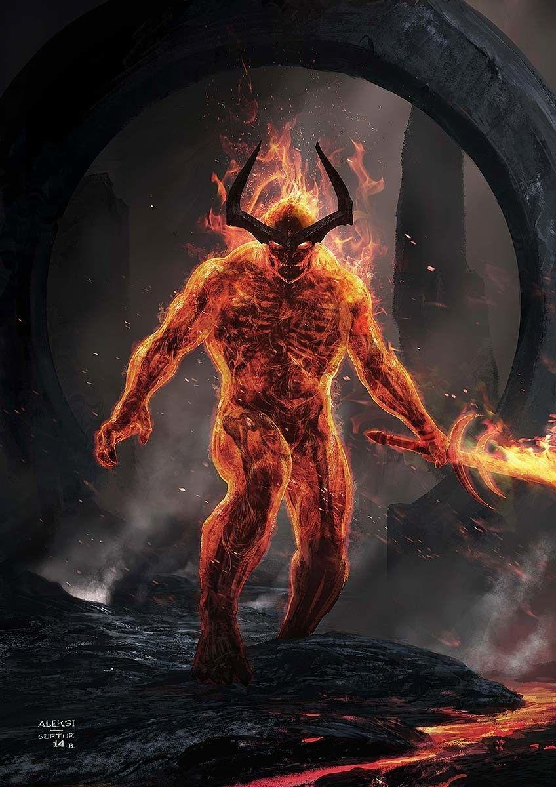

The Red Surtur
Surtur is a fictional Fire Giant appearing in American comic books published by Marvel Comics. He usually
appears as a villain in stories featuring the Norse hero Thor. Based on the fire giant Surtr from Norse
mythology, he was adapted by writer Stan Lee and artist Jack Kirby, and first appeared in Journey into Mystery
#97 (October 1963). The character was once described as one of "The Ten Most Heinous Enemies of the Mighty
Thor".
Superpowers
- Standing over 1,000 ft. in height, Surtur possessed strength and durability far surpassing that of Thor; the
ability to generate intense heat, flames or concussive force; molecular manipulation such as transforming
his fingers into serpents; levitation and inter-dimensional travel.

Directions to the lair of your nemesis.
- From Maryville Take a flight to Asgard.
- In between you may cross over some of the major plantes like Earth, Jupiter etc.
- When you departure at the Asgard take a spell to jump Asgard.
- Reaching Asgard you can find a big castle name "Ragnarok" where supervillain Surtur lives.
Back to the index